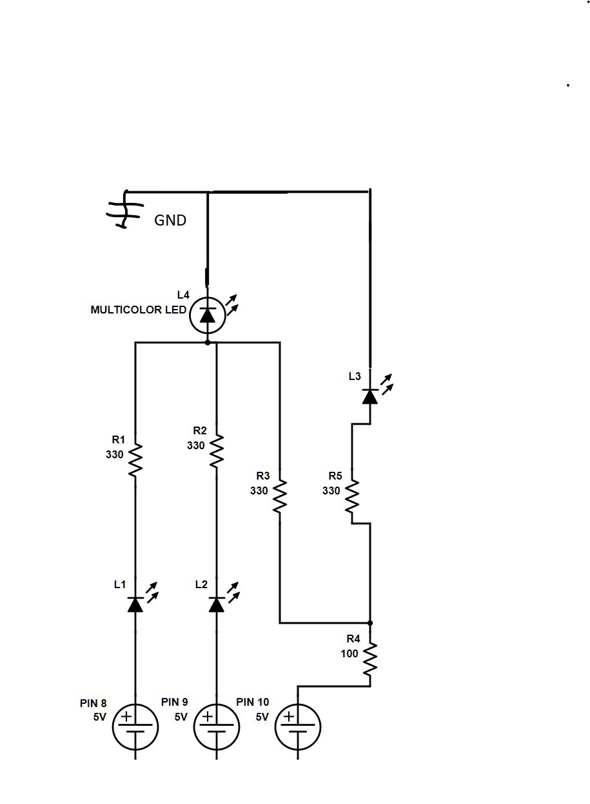

Travis's Assignment 1!
Here is a video of my circut!
For this assignment I wanted to test out how to use the Multicolored LED to do this I connected each lead to the corresponding color of LED so that when I suplied power to that lead we could see what the inputs are. This lets us see exactly what different color combinations make. For example red and green make yellow.
The red and green LEDs have a low enough voltage drop that two can be run in series and have enough current to be bright The blue LEDs have a much higher voltage drop around 3 V so I need to run them in parallel. I used 330 ohm resistors for all three LEDs to reduce the current and brighness a little bit more so that it was easier to look at.
Here is a close up picture of my circut

In arduino code I ran through all the possible color combinations with nested for loops. It was hard to comment these well. If we start from the very inner loop of the red LED the for loop will turn it on and off. The loop outside of that will run that loop twice, once with the green LED on and once with the green LED off. The final loop ouside of that will run that whole thing twice aswell once with the blue on and once with it off.
int off_on[] = {LOW, HIGH}; // Used later to turn a 0 or 1 value into LOW or HIGH values to turn on leds. This is an array.
void setup() {
// Initilizes the pins 8: 10 to run as outputs instead of inputs so that they can provide power:
pinMode(8, OUTPUT);
pinMode(9, OUTPUT);
pinMode(10, OUTPUT);
}
// The loop function will produce all possible combinations of red green and blue and turn on the leds to represent that.
void loop() {
for (int blue = 1; blue >= 0; blue = blue - 1){ // A for loop that will set the variable blue to 1 then 0 each time the loop funciton is run.
digitalWrite(10, off_on[blue]); // If blue is 1 turns on the LED if blue is 0 turns off the LED.
delay(10); // A short delay to prevent damage to components from switching things too fast.
for (int green = 1; green >= 0; green = green - 1){ // This loop sets Green to 1 then to 0 so the led will be turned on the first time through then off the second.
digitalWrite(9, off_on[green]); // If green is 1 turns on the green LED if green is 0 turns off the green LED.
delay(10); // A short delay to prevent damage to components from switching things too fast.
for (int red = 1; red >= 0; red = red - 1){ // This for loop will be run 4 times each time the loop function is run. lettins us see every combination.
digitalWrite(8, off_on[red]); // The same thing as the other led, will use the value of red to turn on of off the led.
delay(1000); // This delay will be run 8 times each loop function, giving us time to view the combination of RGB that was set through the loop.
}
}
}
}